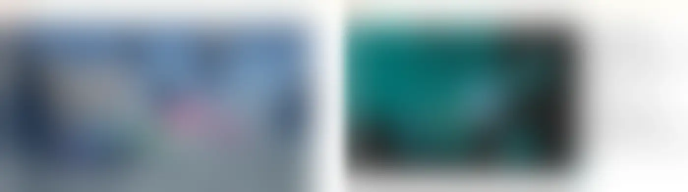

담당
레벨디자인 · 페이즈 동선
구분
던전 · 2023–2026
작업 과정
평면도와 목업 — 회사 대외비 자료라 형태만 남기고 되돌릴 수 없게 흐리게 처리했습니다.

완성 화면
완성 화면 — 해안 요새와 난파선, 페이즈별 전투 공간.
영상
실제 플레이 영상입니다. 여기서 바로 재생됩니다.
던전 · 출시
던전 · 2023–2026·출시
해저 동굴 던전. 페이즈 전환 동선과 낙사 지점을 설계하고, 심연의 제단으로 이어지며 하드·관전 모드 이슈까지 대응했습니다.
평면도와 목업 — 회사 대외비 자료라 형태만 남기고 되돌릴 수 없게 흐리게 처리했습니다.

완성 화면 — 해안 요새와 난파선, 페이즈별 전투 공간.
실제 플레이 영상입니다. 여기서 바로 재생됩니다.